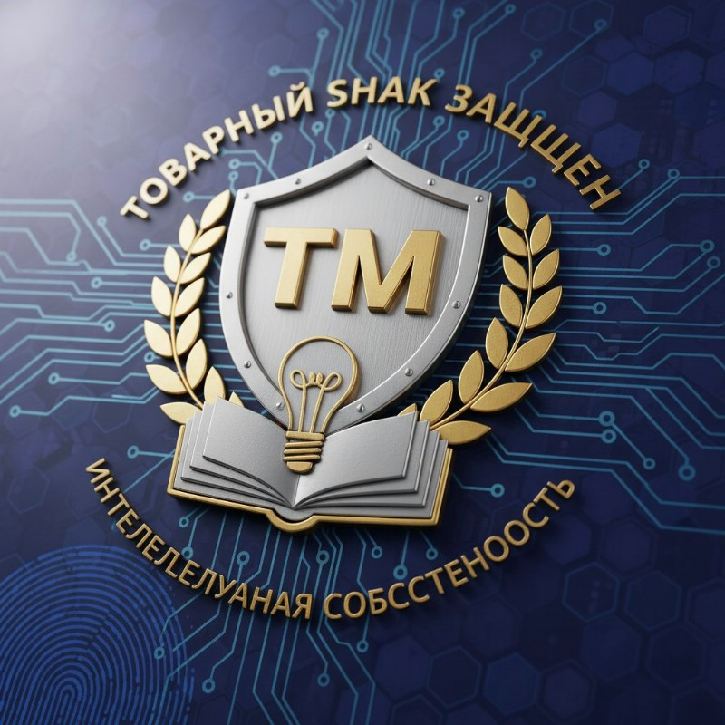

Защита бренда, фирменного наименования и товарного знака может понадобиться как компании, так и физическому лицу в тех случаях, когда возникают посягательства на авторство. Но, чтобы избежать проблем в будущем, лучше заранее позаботиться о надлежащей регистрации, фиксации Вашего бренда или товарного знака.
Стадии защиты бренда или товарного знака
-
Регистрация фирменного наименования, бренда или ТЗ;
-
Предварительный поиск нарушителей бренда или ТЗ;
-
Фиксация нарушения допустимыми способами;
-
Претензия нарушителю, досудебная защита;
-
Судебная защита бренда или ТЗ;
-
Исполнение решения суда, исполнительное производство;

Юристы по защите товарных знаков
8 (925) 502-40-09
8 (925) 502-40-09
Направить заявку на WhatsApp
Если в результате посягательства на Ваш бренд, фирменное наименование или товарный знак, пострадала Ваша деловая репутация или репутация Вашего юридического лица, то следует защищать свои права и в этой части.
Специалисты по спорам с товарными знаками.


Услуги по защите бренда и товарного знака.
Из практики крупных споров с товарными знаками:
Арбитражные разбирательства вокруг бренда становятся всё более частыми явлениями в российском бизнесе. В центре нашего анализа находится судебное противостояние между дочерью основателя «Нэфиса» Кариной Богуславской и местным производителем бытовой химии «Синергетик». Основной причиной конфликта стало использование брендом «Синергетик» сходного товарного знака «Я люблю свою семью». Изначально претензии составили колоссальную сумму — около 10 миллиардов рублей, однако впоследствии снизились многократно.
Основные выводы:
- Вопрос оценки товарного знака: В первом процессе в Казани иск Карины Богуславской был отклонён ввиду неверного подхода к подсудности. Во втором споре, уже в Нижегородском регионе, судьи приняли отчёт иностранной организации «Левада-центр», несмотря на её признание иностранным агентом. Одновременно отвергли проведённое по заказу истца исследование ВЦИОМ, сочтя его некорректным с методологической точки зрения. Таким образом, ключевым фактором успеха стала правильная организация исследования рынка.
- Размеры исковых требований: Суммы компенсаций нередко завышаются истцом, что демонстрирует случай Карины Богуславской, первоначально предъявившей иск на астрономическую сумму. Подобная стратегия вполне оправдана, ведь закон позволяет судам назначать компенсацию от минимальной границы в 10 тысяч рублей до максимума в десятки миллионов рублей. Такая диспозиция стимулирует активное обращение к подобным исковым требованиям, хотя итоговая сумма далеко не всегда соответствует изначально заявленным ожиданиям.
- Практика регистрации товарных знаков: Количество зарегистрированных товарных знаков резко увеличилось, а рынок стремительно перенасыщается однотипными названиями, что осложняет ведение бизнеса и создаёт почву для многочисленных споров. При этом сама процедура оспаривания занимает немало времени и ресурсов, что снижает эффективность подобной защиты.
- Динамика роста жалоб и исков: За последние годы значительно выросло количество обращений в суды по вопросам защиты интеллектуальной собственности. Рост количества дел обусловлен доступностью инструментов защиты и ростом конкуренции на рынке.
- Экономические последствия: Исследование рынка и судебная экспертиза показывают высокую зависимость шансов на успех от качества подготовки дела и адекватности заявленных требований. Недостаточно подкрепленные материалами дела приводят к снижению искомых сумм, а порой и полному отказу в удовлетворении претензий.
Заключение:
Правовая защита товарных знаков становится важной частью стратегии крупных компаний, стремящихся расширить ассортимент и увеличить долю рынка. Вместе с тем, увеличение числа регистраций товарных знаков усложняет конкурентную среду и способствует росту числа судебных тяжб. Важно отметить, что успешность разрешения таких споров зависит не только от величины требуемой компенсации, но и от качества подготовленных исследований и представляемых документов. Несмотря на высокий уровень запросов на компенсацию, большинство дел заканчивается удовлетворением существенно меньших требований, что свидетельствует о важности рационального подхода к ведению дел подобного рода.